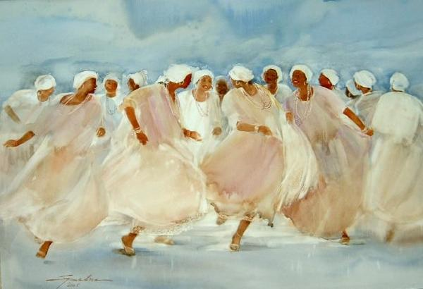

POSTS
[Bossa Nova]Lá vem a baiana 바이아의 여인이 다가오네
“그녀가 삼바춤을 시작할 때
당신은 아찔해질 거예요”

From http://www.galinawatercolors.com/welcome/folklore.php
Lá vem a baiana
De saia rodada, sandália bordada
Vem me convidar para dançar
Mas eu não vou
Lá vem a baiana
Coberta de contas, pisando nas pontas
Achando que eu sou o seu iôiô
Mas eu não vou
Lá vem a baiana
Mostrando os encantos, falando dos santos
Dizendo que é filha do senhor do bonfim
Mas, pra cima de mim?!
Pode jogar seu quebranto que eu não vou
Pode invocar o seu santo que eu não vou
Pode esperar sentada, baiana, que eu não vou
Não vou porque não posso resistir à tentação
Se ela sambar
Eu vou sofrer
Esse diabo sambando é mais mulher
E se eu deixar ela faz o que bem quer
Não vou, não vou, não vou
Nem amarrado porque eu sei
Hum hum hum hum hum hum…
@ 보사노바 동영상을 더 보시려면 여기를 클릭